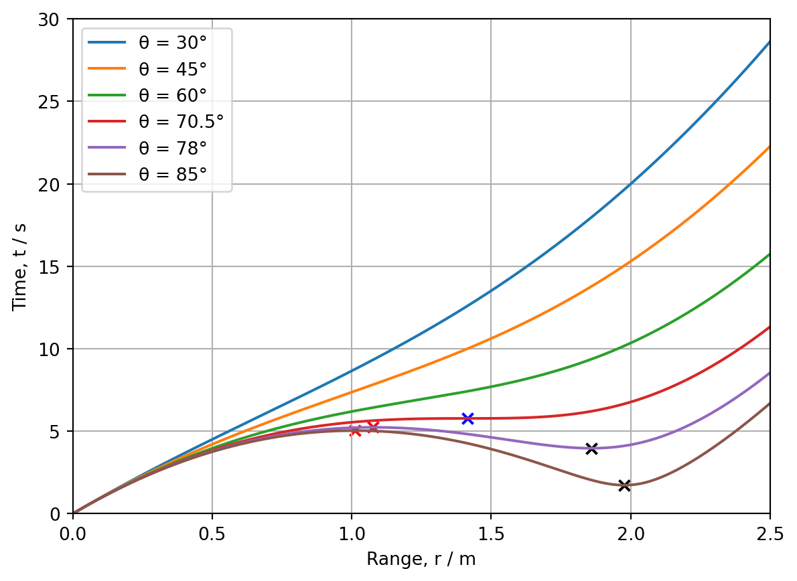
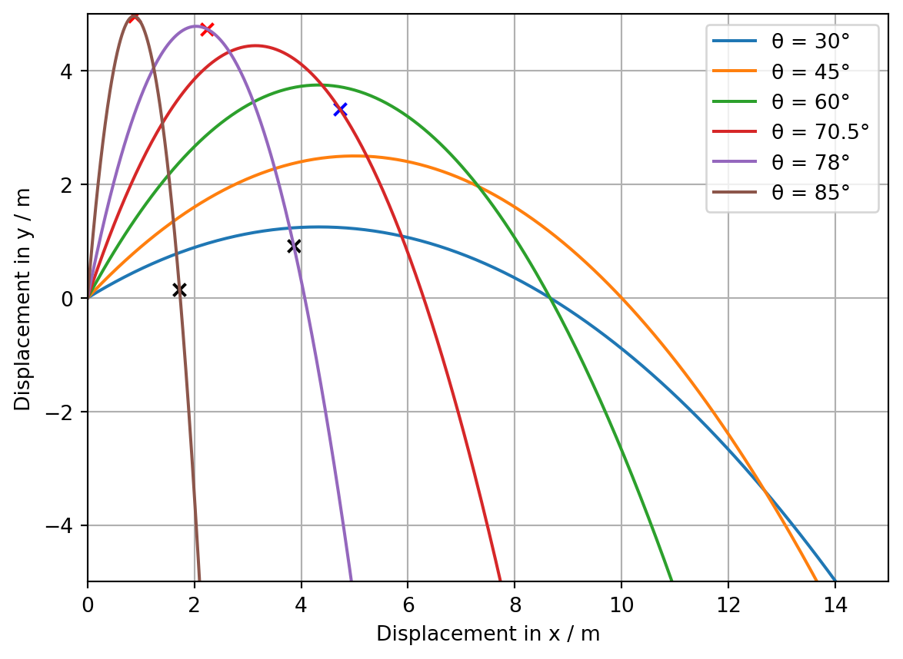

import matplotlib.pyplot as plt
import numpy as np
from matplotlib.figure import FigureBPhO Computational Challenge 2024: Challenge 7: An Examination of the Phenomenon of Local Maxima and Minima on Range Against Time Graphs in Projectile Motion
Python
BPhO Computational Challenge
Computational Physics
Projectile Motion
The solution to the first two challenges of the BPhO Computational Challenge, an analytical projectile model which creates a trajectory and outputs time of flight, range and the apogee.
DISCLAIMER: This is just a snippet of our submission for the competition, since the final product was an application 2800 lines of code in length. To see the two minute video submission detailing the entire solution with my partner watch the video here: https://youtu.be/ViT6NdrrbJo . To begin, the necessary librariesa are imported. Matplotlib is used for plotting, numpy is used for mathematical and trigonometric functions, and figure is imported from matplotlib to create two graphs which are displayed.
# Function to plot r
def rplot(a):
# Paramaters
u = 10
g = 10
arad = (a * np.pi) / 180
# Sin and cos of the angle
sintheta = np.sin(arad)
# Creates array of r and t valuse
range = []
# Appends array with inital conditions
range.append(0)
# Plots the parabolic path of the projectile with a timestep of 0.01s across an interval of tflight
for i in np.arange(0, 2.6, 0.01):
t = i
r = np.sqrt(u**2 * t**2 - g * t**3 * u * sintheta + 0.25 * g**2 * t**4)
range.append(r)
return range# Function to plot t
def tplot():
# Creates array for time valuse
time = []
# Appends array with inital condition
time.append(0)
# Plots the parabolic path of the projectile with a timestep of 0.01s across an interval of tflight
for i in np.arange(0, 2.6, 0.01):
t = i
time.append(t)
return time# Passes parameters of angles
r1 = rplot(30)
r2 = rplot(45)
r3 = rplot(60)
r4 = rplot(70.5)
r5 = rplot(78)
r6 = rplot(85)
t = tplot()# Function to find the t coordinate of the minima
def mint(a):
u = 10
g = 10
a = a * (np.pi/180)
t = ((3 * u) / (2 * g)) * (np.sin(a) + np.sqrt(np.sin(a)**2 - (8/9)))
return t
# Calls function and passses angle parameters
mint1 = mint(78)
mint2 = mint(85)
# Function to find the r coordinate of the minima
def minr(a, t):
u = 10
g = 10
a = a * (np.pi/180)
r = np.sqrt(u**2 * t**2 - g * t**3 * u * np.sin(a) + 0.25 * g**2 * t**4)
return r
# Calls function and passes angle and t paramaters
minr1 = minr(78, mint1)
minr2 = minr(85, mint2)
# Function to find the t coordinate of the maxima
def maxt(a):
u = 10
g = 10
a = a * (np.pi/180)
t = ((3 * u) / (2 * g)) * (np.sin(a) - np.sqrt(np.sin(a)**2 - (8/9)))
return t
# Calls function and passes angle parameters
maxt1 = maxt(78)
maxt2 = maxt(85)
# Function to find the r coordinate of the maxima
def maxr(a, t):
u = 10
g = 10
a = a * (np.pi/180)
r = np.sqrt(u**2 * t**2 - g * t**3 * u * np.sin(a) + 0.25 * g**2 * t**4)
return r
# Calls the function and passes t coordinates and angles
maxr1 = maxr(78, maxt1)
maxr2 = maxr(85, maxt2)
# Finds t and r coordinate of the point of inflection
def stat():
u = 10
g = 10
t = (u / g) * np.sqrt(2)
return t
stat1 = stat()
def star(a, t):
u = 10
g = 10
a = a * (np.pi / 180)
r = np.sqrt(u**2 * t**2 - g * t**3 * u * np.sin(a) + 0.25 * g**2 * t**4)
return r
star1 = star(70.5, stat1) fig1, ax = plt.subplots()
# Components to be plotted
ax.plot(t, r1, label="θ = 30°")
ax.plot(t, r2, label="θ = 45°")
ax.plot(t, r3, label="θ = 60°")
ax.plot(t, r4, label="θ = 70.5°")
ax.plot(t, r5, label="θ = 78°")
ax.plot(t, r6, label="θ = 85°")
# Plots minima
ax.scatter(mint1, minr1, color="black", marker="x")
ax.scatter(mint2, minr2, color="black", marker="x")
# Plots maxima
ax.scatter(maxt1, maxr1, color="red", marker="x")
ax.scatter(maxt2, maxr2, color="red", marker="x")
# Plots point of inflection
ax.scatter(stat1, star1, color="blue", marker="x")
# Sets the parameters of the plot
ax.set_xlabel("Range, r / m")
ax.set_ylabel("Time, t / s")
ax.set_ylim(0, 30)
ax.set_xlim(0, 2.5)
ax.grid()
ax.legend()
def xplot(a):
u = 10
g = 10
arad = (a * np.pi) / 180
ux = u * np.cos(arad)
# Creates an empty arrary for the x and y coordinates of the trajectory
x = []
# Plots the parabolic path of the projectile with a timestep of 0.01s across an interval of tflight
for i in np.arange(0, 3, 0.01):
t = i
x.append(ux * t)
return xdef yplot(a):
u = 10
g = 10
h = 0
arad = (a * np.pi) / 180
uy = u * np.sin(arad)
# Creates an empty arrary for the x and y coordinates of the trajectory
y = []
# Plots the parabolic path of the projectile with a timestep of 0.01s across an interval of tflight
for i in np.arange(0, 3, 0.01):
t = i
T = t * t
y.append(h + (uy * t) - (0.5 * g * T))
return y # Passes parameters of angles
x1 = xplot(30)
x2 = xplot(45)
x3 = xplot(60)
x4 = xplot(70.5)
x5 = xplot(78)
x6 = xplot(85)
# Passes parameters of angles
y1 = yplot(30)
y2 = yplot(45)
y3 = yplot(60)
y4 = yplot(70.5)
y5 = yplot(78)
y6 = yplot(85)# Plots maxima, minima and inflection points on y against x graph
# Function to find x coordinate of each stationary point
def stax(a, t):
u = 10
g = 10
a = a * (np.pi / 180)
ux = u * np.cos(a)
x = ux * t
return x
# Calls function and passes paramters angle and t
stax1 = stax(78, mint1)
stax2 = stax(85, mint2)
stax3 = stax(78, maxt1)
stax4 = stax(85, maxt2)
stax5 = stax(70.5, stat1)
# Function to find the y coordinate of each stationary point
def stay(a, t):
u = 10
g = 10
a = a * (np.pi / 180)
uy = u * np.sin(a)
y = uy * t - 0.5 * g * t**2
return y
# Calls function and passes paramaters angle and t
stay1 = stay(78, mint1)
stay2 = stay(85, mint2)
stay3 = stay(78, maxt1)
stay4 = stay(85, maxt2)
stay5 = stay(70.5, stat1)# Components to be plotted
fig2, ax = plt.subplots()
ax.plot(x1, y1, label="θ = 30°")
ax.plot(x2, y2, label="θ = 45°")
ax.plot(x3, y3, label="θ = 60°")
ax.plot(x4, y4, label="θ = 70.5°")
ax.plot(x5, y5, label="θ = 78°")
ax.plot(x6, y6, label="θ = 85°")
# Plots stationary points
ax.scatter(stax1, stay1, color="black", marker="x")
ax.scatter(stax2, stay2, color="black", marker="x")
ax.scatter(stax3, stay3, color="red", marker="x")
ax.scatter(stax4, stay4, color="red", marker="x")
ax.scatter(stax5, stay5, color="blue", marker="x")
# Sets the parameters of the plot
ax.set_xlabel("Displacement in x / m")
ax.set_ylabel("Displacement in y / m")
ax.set_ylim(-5, 5)
ax.set_xlim(0, 15)
ax.grid()
ax.legend()
plt.show()